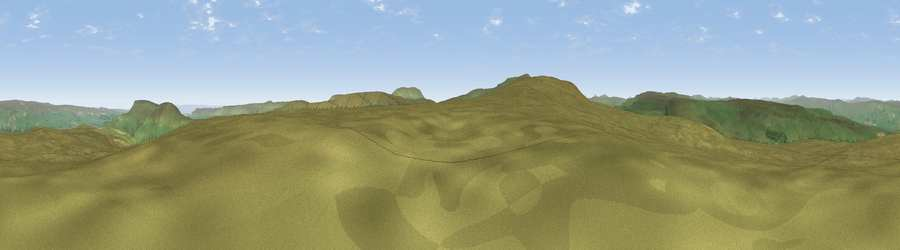

Viewpoint near West Burton
#10346 in England · top 19% of its area beats it · near West BurtonThe view, rendered

A 360° render of this exact spot computed from the terrain model, tree cover and land cover — summer colours, afternoon light, calibrated against photographs of famous viewpoints. Real trees, hedges and buildings will differ in detail.
The panorama
Grey silhouette: terrain skyline in each direction (720 bearings, Earth curvature and refraction included). Dashed green: skyline with trees (+15 m) and buildings (+8 m) as obstacles. Blue strip: how far the ground is visible on each bearing.
Where the view opens
Wedge length = distance to the farthest visible ground on that bearing (vegetation-aware). Rings at 10, 25 and 50 km.
What fills the view
98% grassland · 1% woodland
Angular shares of the visible panorama (visual magnitude), not map area. Landscape diversity 0.04 (0–1 Shannon).
Key numbers
More beautiful places nearby
The staircase of upgrades: each row has a higher view potential than everything closer. Driving times are estimates from straight-line distance, calibrated against real road routing — check an actual route before setting out.
| Place | Direction | Drive | Score |
|---|---|---|---|
| Naughtberry Hill | SW · 1 km | ~2 min | 69.7 |
| Viewpoint near Buckden | SSW · 4 km | ~9 min | 77.3 |
| Viewpoint near East Witton | E · 16 km | ~28 min | 77.8 |
| Whernside | W · 24 km | ~40 min | 79.9 |
| Viewpoint near Kirby Knowle | E · 47 km | ~68 min | 80.5 |
| Warton Crag | WSW · 50 km | ~71 min | 83.2 |
| Beacon Hill | ENE · 51 km | ~72 min | 84.7 |
| Carlton Bank | ENE · 57 km | ~79 min | 85.1 |
54.23662, -2.02950 · source: screening · position refined by local search. Computed location — check access rights before visiting.